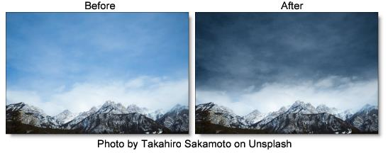
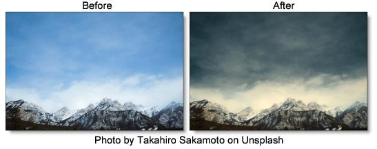

Polarizer
Description
Polarizer
The greatest use of polarizing filters is to achieve a darkened, deep blue sky. Our digital version of the Polarizer is designed to do just that. Through the use of a matte and an adjustable gradient, the color of the sky can be adjusted.
Warm Polarizer
Combines the benefits of the Polarizer with a warming filter making it ideal for portraits and scenics.
Category
Color.
Controls
Presets
To select a preset, pick one from the Presets window. If you would like to view presets from a different category, use the pop-up menu at the top left of the Presets window.
Sky
Color Correct controls are provided to adjust the sky.
Hue
Rotates the hue of the sky.
Saturation
Adjusts the saturation of the sky. Positive values saturate, negative values desaturate.
Brightness
Adjusts the brightness of the sky. Positive values brighten, negative values darken.
Contrast
Adjusts the contrast of the sky. Positive values increase contrast, negative values decrease contrast.
Gamma
Adjusts the gamma of the sky. The gamma adjustment leaves the white and black points the same and only modifies the values in-between. Positive values lighten the midtones, negative values darken the midtones.
Red
Adds or subtracts red from the sky.
Green
Adds or subtracts green from the sky.
Blue
Adds or subtracts blue from the sky.
Temperature
Sets the color temperature of the sky. Dragging the slider to the right makes the sky cooler (bluer) and dragging the slider to the left makes the sky warmer (redder).
Temperature
Applies a warming filter to the image. Go to the
Temperature section of Common Filter Controls to see how the Temperature controls work.
Grad
The Polarizer can optionally use a gradient that limits where the filter is applied. For instance, if the polarization is affecting areas other than the sky, enable the Grad and adjust it to limit the areas of polarization. Go to the
Grad section of Common Filter Controls to see how the Grad controls work.
Matte
Hue
The Polarizer isolates the sky using a matte based on a blue hue. Use the Hue eyedropper to select the exact color of the sky if you are not seeing enough polarization.
Range
Increases or decreases the range of values in the hue matte. A low Range value indicates a narrow range of values. A high Range value indicates a large range of values included in the matte.
Blur
Sets the softness of the matte by using a quality blur.
Go to the
Matte parameters to see how they work.